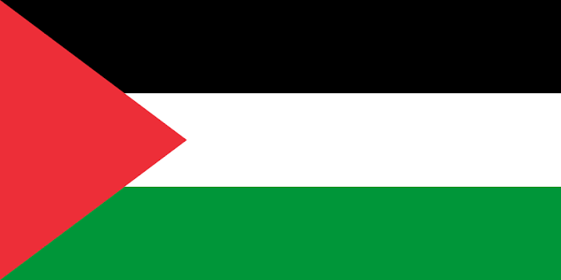

Palestina: Lugar mas letal del planeta
El conflicto directo que estalló a finales de 2023 se ha mantenido con extrema crudeza, consolidando a esta región como el lugar más letal del planeta para la población civil.
La situación actual:
La intervención militar a gran escala por parte de Israel ha destruido la mayor parte de la infraestructura habitacional, hospitalaria y educativa en Gaza. Prácticamente toda la población gazatí sufre desplazamientos forzados masivos y recurrentes.
Por qué es de los más peligrosos:

Datos sobre el conflicto en Palestina
| Indicador | Dato / Valor |
|---|---|
| Tasa / Total de Mortalidad | +34,000 fallecidos (Conflicto reciente) |
| Índice de Paz Global (GPI) | 145 (Nivel de paz muy bajo) |
| Población Desplazada | Aproximadamente 1.9 millones de personas |
| Inseguridad Alimentaria | Fase de Riesgo de Hambruna (Grave) |